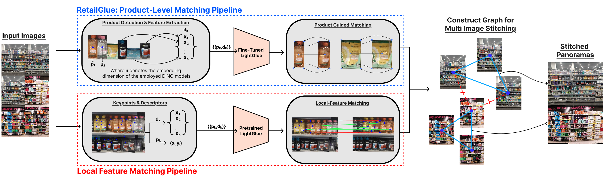
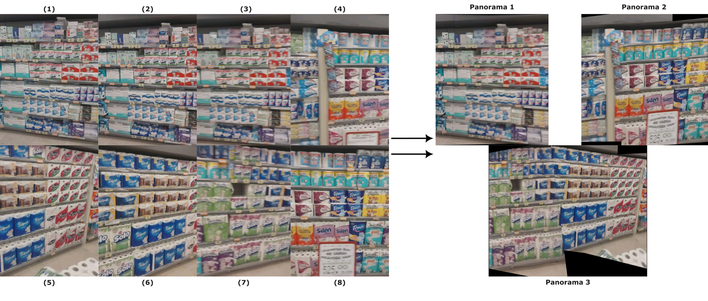
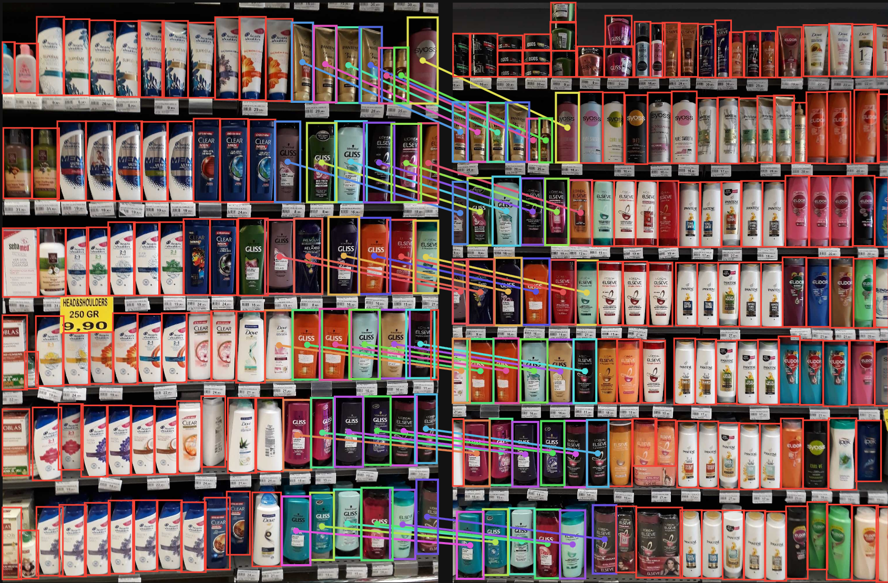

Abstract
Method Overview
RetailGlue inverts the conventional detect-after-stitch paradigm. Rather than applying detection to large, potentially distorted panoramas, we detect products on individual frames first and let those semantic identities drive the matching process.

Product Detection
YOLOv11l trained on SKU-110K localizes products on individual frames.
Embedding Extraction
DINOv3 [CLS] tokens encode appearance invariant to viewpoint & lighting.
Product-Guided Matching
Fine-tuned LightGlue establishes correspondences using semantic descriptors.
Graph Construction
Pairwise matches build a weighted graph; redundant bridges are pruned.
Panorama Composition
Connected components yield geometrically consistent panoramas via BFS warping.
Contributions
- RetailGlue A novel product-level LightGlue adaptation using DINOv3 semantic embeddings as descriptors, specifically designed for robust retail image stitching.
- Pipeline An inverted detect-then-match pipeline that preserves object detection quality by operating on individual frames rather than large stitched panoramas.
- Graph A graph-based multi-image stitching framework with robustness to discontinuous captures via graph partitioning, achieving up to a 20× runtime speedup.
- Dataset RemRetail100_v2: an extended benchmark with 32,958 annotated product correspondences across 919 image pairs.
Results
Product Matching Quality
We evaluate LightGlue fine-tuned with different DINOv3 variants against a DINOv2 baseline. DINOv3 ViT-L/16 achieves the best recall (79.4%), critical for reliable geometric alignment.
| DINO Variant | Desc. Dim. | Precision (%) | Recall (%) | F1 (%) |
|---|---|---|---|---|
| DINOv2 ViT-S/14 | 384 | 69.7 | 61.5 | 65.3 |
| DINOv3 ViT-S/16 | 384 | 78.2 | 71.9 | 74.9 |
| DINOv3 ViT-B/16 | 768 | 79.1 | 68.4 | 73.4 |
| DINOv3 ViT-L/16 | 1024 | 76.8 | 79.4 | 78.1 |
Table 1. Product matching performance for fine-tuned LightGlue models. Bold indicates best in column.
End-to-End Stitching Quality on RemRetail100_v2
RetailGlue with DINOv3 ViT-B/16 achieves the best end-to-end F1 of 88.4%, surpassing all local feature matching baselines including the dense matcher RoMav2.
| Pipeline / Matcher | Dim. | Acc. | Prec. | Rec. | F1 |
|---|---|---|---|---|---|
| Local feature matching pipelines (baselines) | |||||
| SuperGlue | 256 | 78.7 | 89.9 | 85.3 | 86.5 |
| SuperPoint + LightGlue | 256 | 80.2 | 89.5 | 86.9 | 87.8 |
| DISK + LightGlue | 128 | 73.9 | 85.9 | 82.5 | 83.3 |
| MINIMA + LightGlue | 256 | 79.8 | 90.1 | 86.6 | 87.6 |
| RoMav2 | — | 80.3 | 90.4 | 86.9 | 88.1 |
| SuperPoint + GlueStick | 256 | 79.5 | 89.6 | 86.5 | 87.4 |
| SuperPoint + LightGlueStick | 256 | 80.2 | 90.2 | 87.0 | 87.9 |
| RetailGlue (Ours) | |||||
| DINOv2 ViT-S/14 + LightGlue | 384 | 79.9 | 88.3 | 87.6 | 87.9 |
| DINOv3 ViT-S/16 + LightGlue | 384 | 79.9 | 89.4 | 87.4 | 88.1 |
| DINOv3 ViT-B/16 + LightGlue | 768 | 80.7 | 89.4 | 87.7 | 88.4 |
| DINOv3 ViT-L/16 + LightGlue | 1024 | 80.2 | 89.7 | 87.4 | 88.3 |
Table 2. End-to-end stitching quality on RemRetail100_v2. All RetailGlue variants use the SKU-110K YOLO detector.
Runtime Comparison
Product localization and descriptor extraction are inherent prerequisites for retail analytics and add no extra overhead. The graph construction phase is the true bottleneck — and RetailGlue's semantic sparsity makes it negligible.
| Sequence | Method | Graph Const. (s) | Refinement (s) | Composition (s) | Total (s) |
|---|---|---|---|---|---|
| Short (4 images) | |||||
| RoMav2 | 3.58 | 0.01 | 0.45 | 4.03 | |
| DISK + LightGlue | 4.85 | 0.03 | 0.68 | 5.56 | |
| RetailGlue (ours) | 0.48 | 0.01 | 0.67 | 1.16 | |
| Medium (8 images) | |||||
| RoMav2 | 15.12 | 0.01 | 0.69 | 15.82 | |
| DISK + LightGlue | 9.11 | 0.05 | 0.60 | 9.76 | |
| RetailGlue (ours) | 1.58 | 0.03 | 0.73 | 2.34 | |
| Long (13 images) | |||||
| RoMav2 | 59.63 | 0.62 | 0.18 | 60.43 | |
| DISK + LightGlue | 20.57 | 0.59 | 0.20 | 21.36 | |
| RetailGlue (ours) | 2.34 | 0.51 | 0.18 | 3.03 | |
Table 3. Runtime comparison (seconds). RetailGlue achieves 7× speedup over DISK+LightGlue and 20× over RoMav2 on long sequences.
Qualitative Results
Side-by-side comparisons of DISK + LightGlue (baseline) and our RetailGlue pipeline. Use the arrows to browse examples.
✓ Success Cases
RemRetail100_v2 Dataset
We introduce an extended retail benchmark specifically designed for image stitching evaluation. All data is publicly released on the Hugging Face Hub.
Ground truth correspondences were established through a semi-automatic process: initial matches were generated via brute-force matching, then manually verified and corrected using a custom annotation interface. The dataset is split 70/20/10 at the sequence level to prevent data leakage.
Downloads
The benchmark release is organized into four complementary dataset repositories on Hugging Face:
| Dataset | Contents | Link |
|---|---|---|
| RemRetail100_v2 | Raw shelf images for end-to-end stitching evaluation | RemRetail100_v2 |
| LightGlue · DINOv3 ViT-S/16 | Images + 384-d embeddings + pair matches | RetailGlue-lightglue-dinov3-vits |
| LightGlue · DINOv3 ViT-B/16 | Images + 768-d embeddings + pair matches | RetailGlue-lightglue-dinov3-vitb |
| LightGlue · DINOv3 ViT-L/16 | Images + 1024-d embeddings + pair matches | RetailGlue-lightglue-dinov3-vitl |

BibTeX
If you find our work useful, please cite:
@inproceedings{oztuner2026retailglue,
title = {RetailGlue: Semantic Product-Level Image Stitching
for Retail Shelf Panoramas},
author = {\"Ozt\"uner, Arda and \c{C}elik, Ayberk and
Yal\c{c}{\i}ner, \.{I}brahim \c{S}amil and Calap, Server},
booktitle = {Proceedings of the IEEE/CVF Conference on Computer Vision
and Pattern Recognition Workshops (CVPRW) -- Image Matching:
Local Features {\&} Beyond},
year = {2026}
}
Acknowledgements
We thank the open-source communities behind YOLOv11, DINOv3, and LightGlue. We also gratefully acknowledge the RemPeople family for their valuable support and contributions to this work, with special thanks to Rem People.